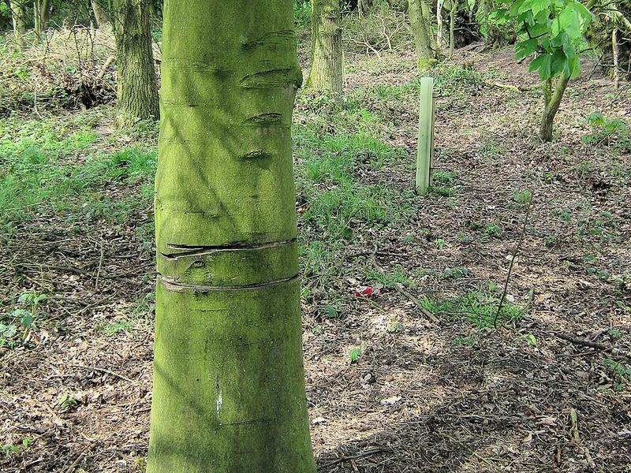

How hard your winch has to pull to get you out, what a double or triple line does, and what your winch, its drum and its battery go through on the way. With a source for every number.
Set up your recovery on the pictures: type on the vehicle, the winch and the rope, pick the ground, drag the slope. Everything updates as you go.
Blue boxes, chips and sliders are yours to change; everything else is worked out from them.
Ground
How deep
Slope
How the rope is run
Rope angle off the way it must move
The pull, metre by metre
Your winch, the drum cut through
must stay on the drum
on the drum at the start
wound in during the pull
paid out
Current the winch draws
0 Acurrent draw
Winch for this pull
Synthetic winch rope: strength and WLL
Tree protector: what it is and why

Ring-barked. This sycamore's bark was cut through all the way round, on purpose with a chainsaw, so the tree would die standing (Brereton Heath Country Park, England). It isn't winch damage, but it's the injury a tree protector is there to prevent. Photo: Jonathan Kington, CC BY-SA 2.0, cropped.
Seen from above. Wrong: the rope goes round the tree and its hook is clipped back onto the rope itself. WARN: never wrap the winch rope back onto itself; use a tree trunk protector (or a choker chain) on the anchor.
Why a winch loses pull as the rope piles upBlock and shackle ratings: MBS and WLLWhat this page can't tell you